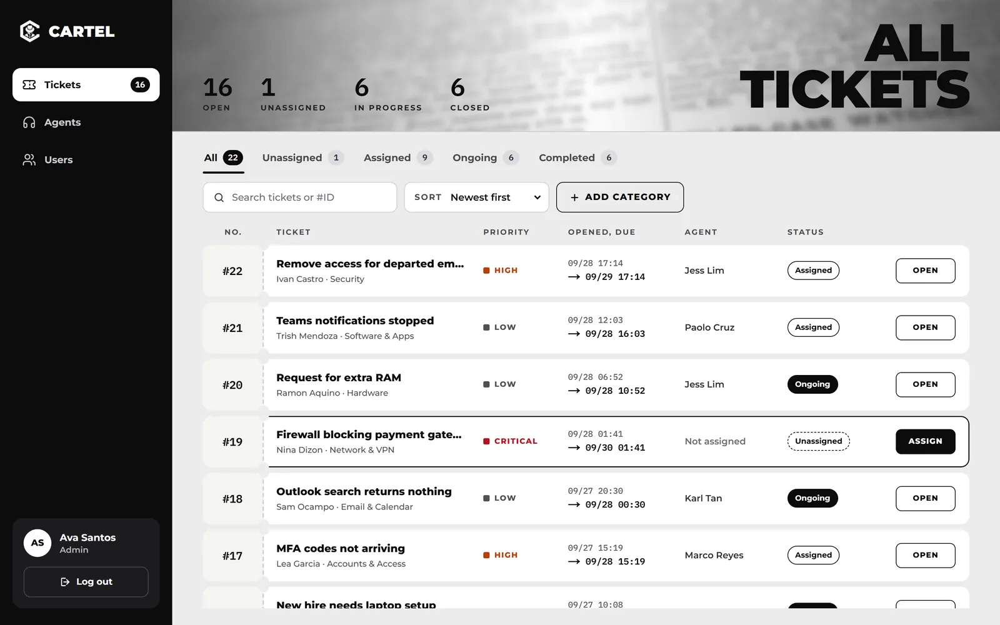
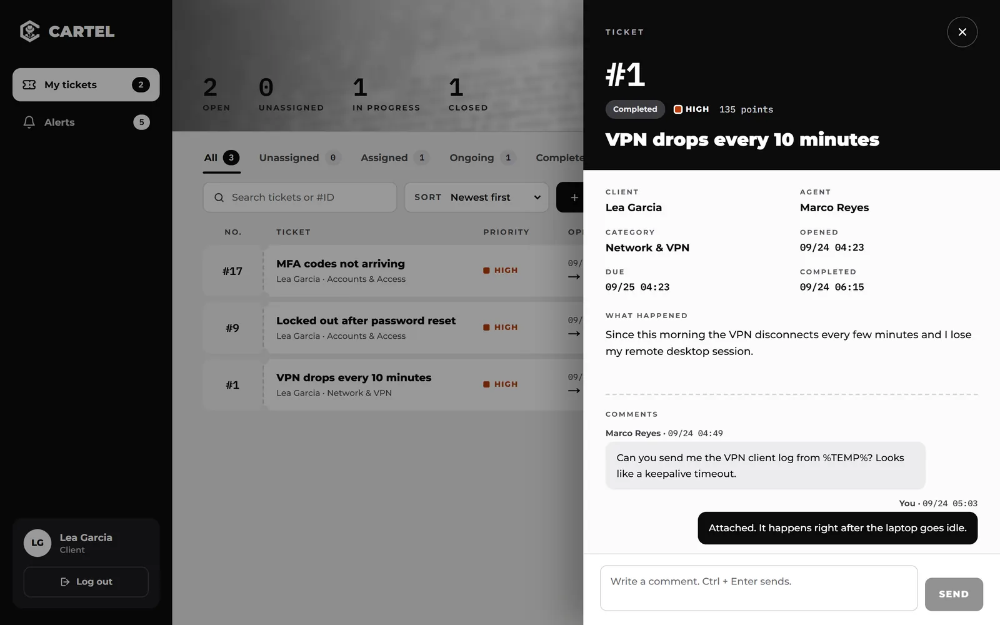
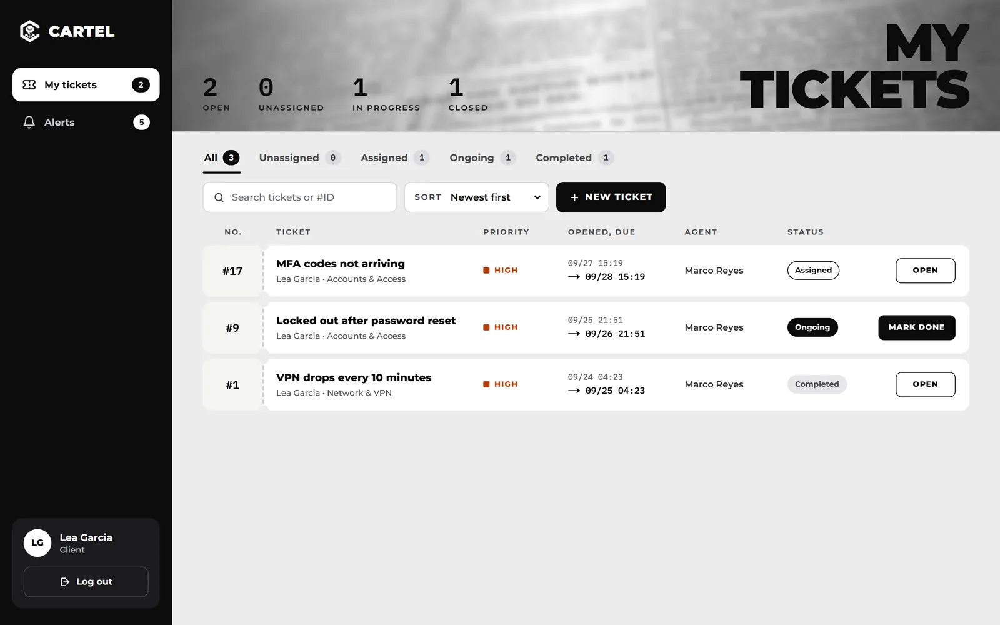
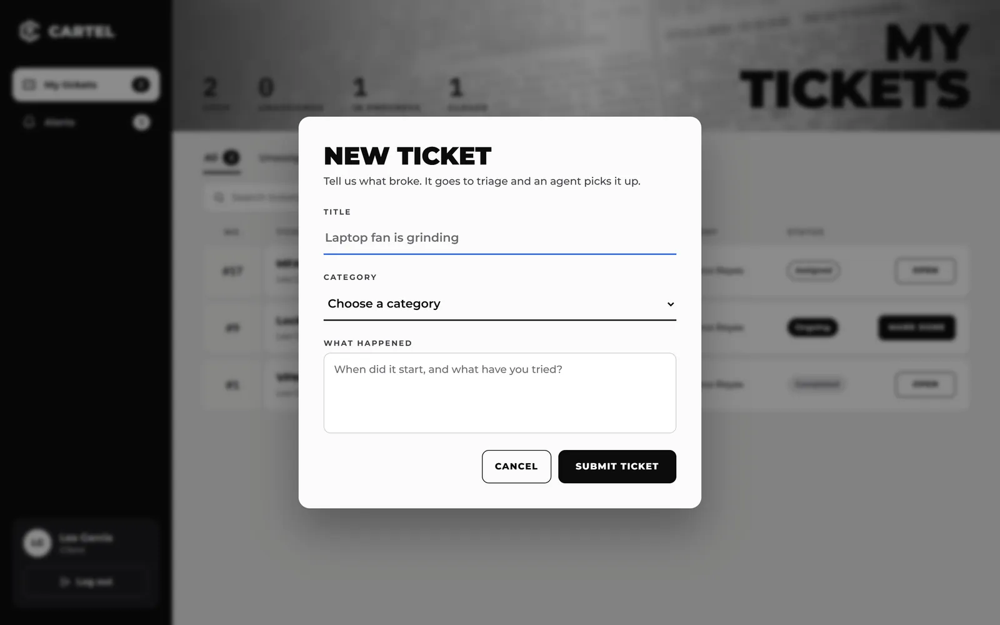
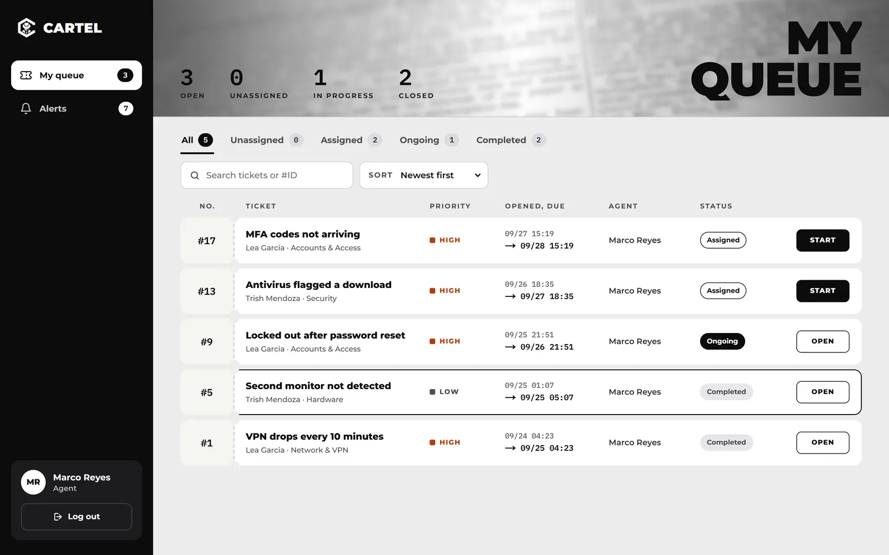
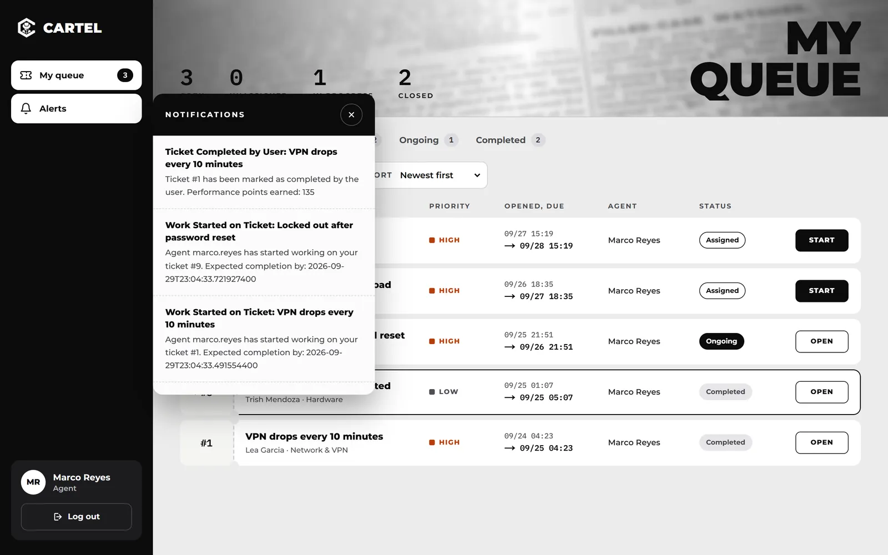
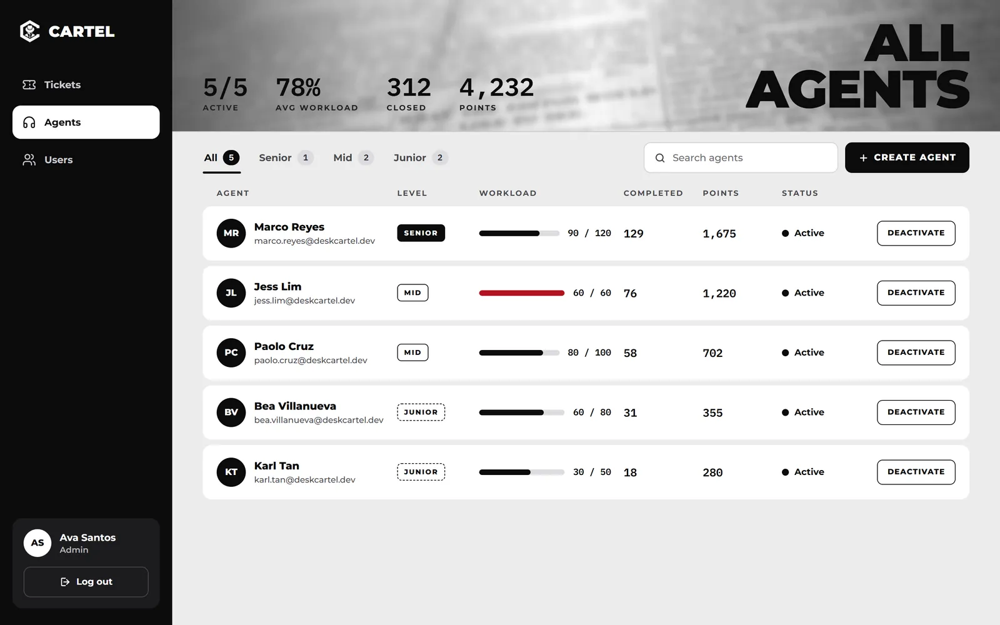
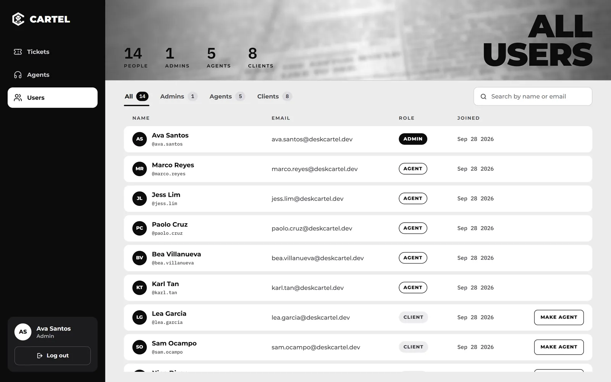

Web app · Help desk · 2025
Queue Tip
A help desk ticketing system that never lets a ticket sit in the wrong pile. Clients report an issue, it's triaged by priority, and it lands with the agent who has the most room to take it, while admins watch the whole floor in real time.


~ $ cat why.md
Tickets should find people, not the other way round
In most small support teams, tickets pile up in a shared inbox and whoever grabs them first gets them. Urgent issues wait behind easy ones, and the busiest agent keeps getting more.
Queue Tip replaces the grab bag with rules. Every ticket gets a priority and a deadline, every agent has a capacity that grows with experience, and assignment always goes to the agent with the most room left. Three roles see three different views of the same live data.
~ $ ls ./features
01
Report an issue in seconds
Clients sign up with email verification, then open a ticket with a title, a category and what happened. They track every ticket they've raised, see who's working on it and when it's due, and mark it done when it's fixed.
- Tabs for unassigned, assigned, ongoing and completed
- Search and sort by newest, highest priority or due soonest


02
Routed to whoever has room
New tickets are auto-assigned to the active agent with the lowest workload who can fit the ticket's weight. If nobody can, the ticket waits as unassigned and an admin can assign it with one click.
- Priority sets the deadline: low, medium, high and critical
- AI classifies priority when the client doesn't choose one
- Agents start work from their queue, which stamps the timeline


03
Every ticket tells its story
Opening a ticket slides in a drawer with the client, agent, category, due date and completion time, plus a threaded conversation between the client and the agent. Notifications keep both sides posted as work starts and finishes.
- Comment threads with replies on every ticket
- Real time notifications and public chat over WebSockets
04
A leveling system for agents
Agents start as juniors and move up to mid and senior as they close tickets. Each level raises how much work they can carry, and every closed ticket earns performance points based on its category and priority.
- Workload bars against each agent's capacity
- Completed tickets, points and active status at a glance
- Admins create, promote and deactivate agents

05
One board to run the desk
Admins see every ticket across the company, assign what's stuck, manage categories and their point values, and turn any client into an agent from the users list.
- Live counts for open, unassigned, in progress and closed
- Role based access for clients, agents and admins

~ $ cat stack.txt
Under the hood
Spring Boot 3
REST controllers, JPA with MySQL, Spring Security with JWT and role checks, and OpenAPI docs through Swagger.
Next.js + TypeScript
Separate app for clients, agents and admins, styled with Tailwind and backed by React Query.
WebSockets (STOMP)
Live notifications and chat pushed from the server instead of polling.
Workload based routing
Capacity grows with each agent's level and history, and assignment always picks the lightest queue that fits.